世界模型 · 第 3 期 · 2023 → 2026
Cosmos
UniPi → Genie → Cosmos 1 → Cosmos Policy → Cosmos 3：视频生成模型从「想象一段视频」到「视频和动作一起生成」
可lip
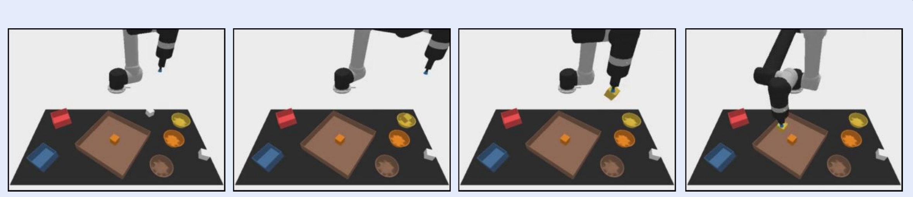
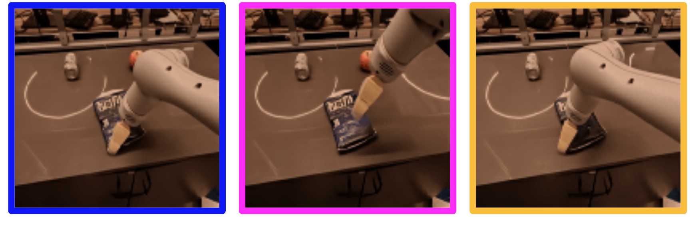
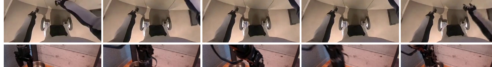
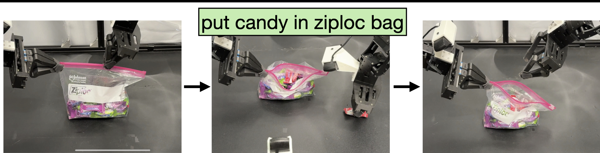
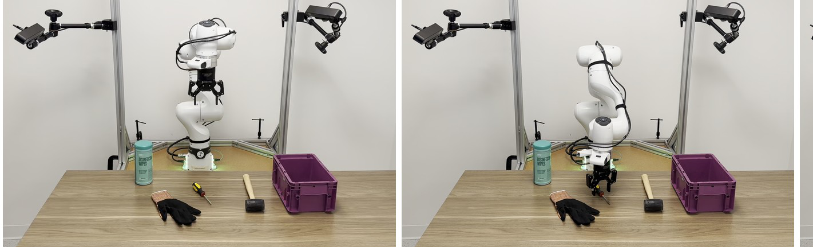
00这条线
六篇论文，三年半
前两篇讲思想和影响，Cosmos 1 讲接口，重点是后两篇的架构、训练、数据、实验
2023-02
UniPi
文本 + 首帧生成视频计划
逆动力学模型翻成动作
逆动力学模型翻成动作
2024-02
Genie
3 万小时游戏视频
无标注学出 8 个隐动作
无标注学出 8 个隐动作
2025-01
Cosmos 1
2000 万小时视频预训练
世界基础模型平台
世界基础模型平台
2025-10
Predict 2.5
flow matching · 三合一
仍然只出画面
仍然只出画面
2026-01
Cosmos Policy
视频模型后训练成策略
LIBERO 98.5%
LIBERO 98.5%
2026-06
Cosmos 3
语言 · 视频 · 音频 · 动作
一个模型
一个模型
00这条线 · 五篇放在一起看
动作在哪进出：模型外面 → 输入 → 输出 → 正式模态
01UniPi · 2023-02 · Du, Yang 等 · MIT / Google DeepMind / Berkeley · NeurIPS 2023
视频当统一的状态接口，文本当统一的任务接口
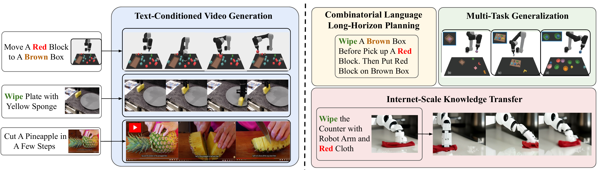
01UniPi · 方法 · 论文图 2
首帧 + 文本 → 视频计划 → 逆动力学模型 → 动作
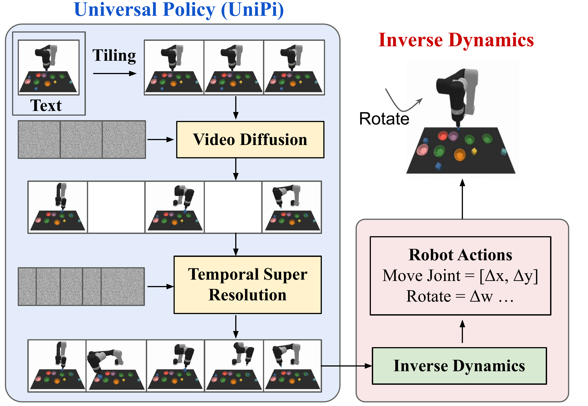
01UniPi · 实验 · 论文图 4 · 仿真 PyBullet · 开环执行
上排是画出来的计划，下排是机械臂真的走完的样子
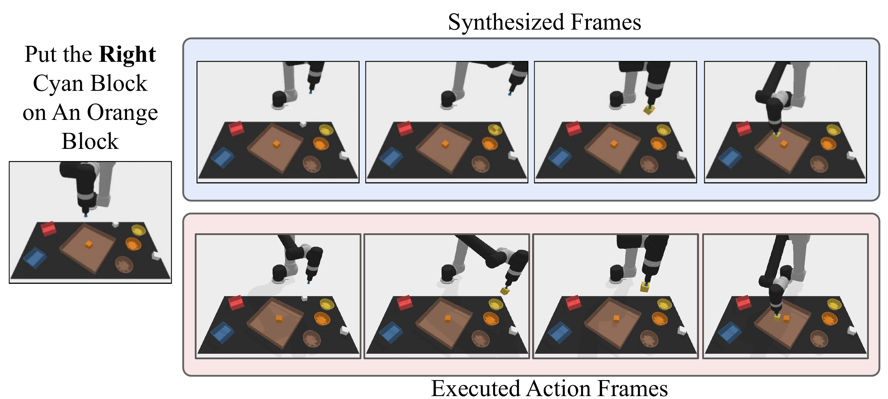
01UniPi · 影响 · imagine-then-execute 这条线
UniPi 之后：后面的工作各换掉它的一段
| 工作 · 时间 | 换掉了 UniPi 的哪一段 | 留下的东西 |
|---|---|---|
| AVDC · 2023-10 | 不训逆动力学模型，用光流加相机几何直接从视频算动作 | 视频 → 动作这一段可以不学 |
| SuSIE · 2023-11 | 不生成整段视频，只生成一张子目标图，再接目标条件的策略 | 计划粒度从视频变成一张图 |
| VPP · 2024-12 | 不解码视频，直接拿视频扩散模型的中间特征给动作头 | 视频分支不再出像素 |
| DreamGen · 2025-05 | 把生成的视频当数据，打上动作标签再训策略 | 视频世界模型当数据引擎 |
| DreamZero · Cosmos Policy · 2026 | 视频和动作放进同一个模型一起去噪，没有逆动力学模型 | 本期后半 |
02Genie · 2024-02 · Bruce, Dennis 等 · Google DeepMind · ICML 2024 最佳论文
只用视频，学出逐帧可控的生成式环境
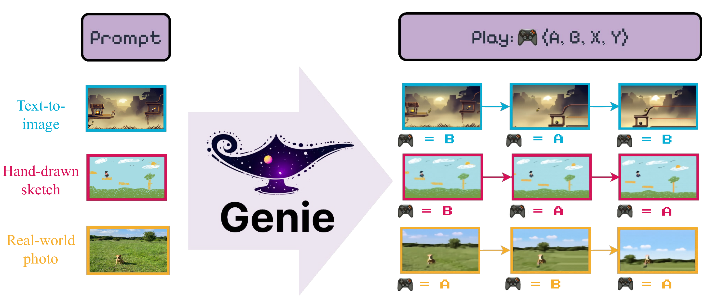
论文表 1 · 三类模型
| 模型类别 | 训练数据 | 控制粒度 |
|---|---|---|
| 世界模型（Dreamer 等） | 视频 + 动作 | 逐帧 |
| 视频生成模型（Imagen Video 等） | 视频 + 文本 | 视频级 |
| Genie | 只要视频 | 逐帧 |
02Genie · 架构 · 论文图 3 · 三个组件都是 ST-transformer
视频 tokenizer · 隐动作模型 · 动力学模型
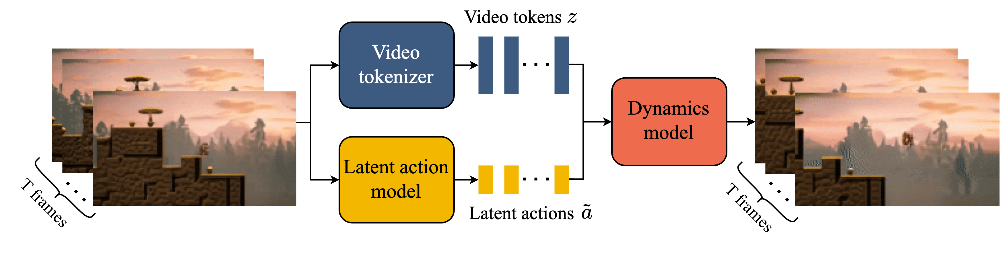
02Genie · 隐动作模型 LAM · 论文图 5 · 码本只有 8 个码
编码器看到下一帧，解码器看不到，中间 8 选 1
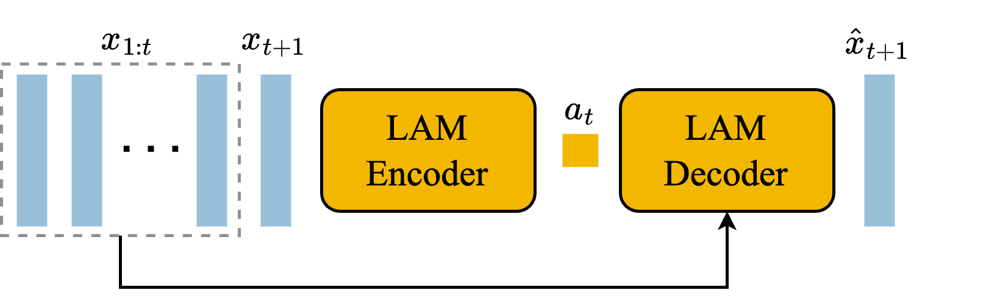
02Genie · 实验 · 论文图 13 · RT-1 + QT-Opt 视频，动作标签全部丢掉 · 2.5B 模型
机器人视频上学出的三个按钮：down · up · left
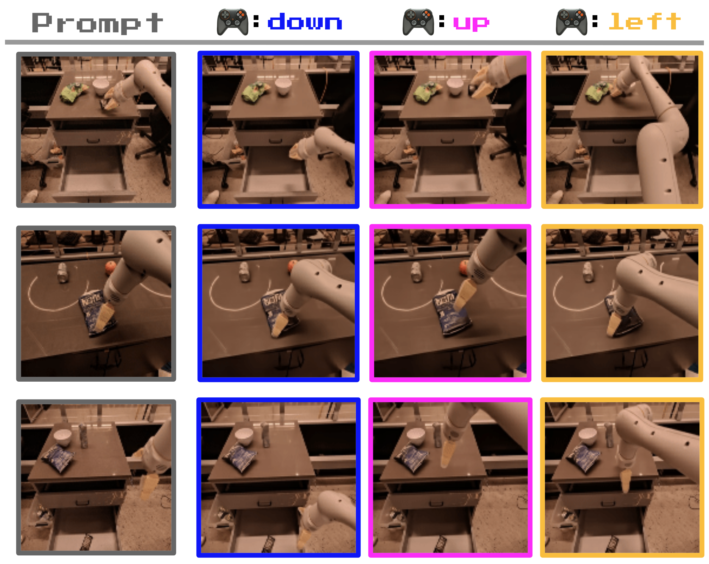
02Genie · 影响 · latent action 这条线
Genie 之后：隐动作成了无标注视频和机器人的接口
| 工作 · 时间 | 拿 Genie 的什么去用 | 结果 |
|---|---|---|
| LAPA · 2024-10 | 用 Genie 式的 VQ 隐动作给人类视频打标，预训练 VLA | 真机比 OpenVLA 高 6.2 点 |
| Genie 2 · Genie 3 · 2024-12 / 2025-08 | 单图生成可玩 3D 世界；720p、24 fps 实时交互 | 只有博客，没有论文；2026-01 Project Genie 向订阅用户开放 |
| DreamGen · 2025-05 | 用 LAPA 给生成出来的视频打伪动作 | 合成视频可以直接训策略 |
| Motus · 2025-12 | 光流当隐动作做预训练 | 隐动作不一定要 VQ |
| DreamDojo · 2026-02 | 4.4 万小时第一人称人类视频 + 连续隐动作 | 蒸馏后约 10 FPS 交互 |
03Cosmos 1 · 2025-01 · NVIDIA · 世界基础模型平台 · 2000 万小时视频 · 1 万张 H100 训三个月
先预训练一个通才，再后训练成专才
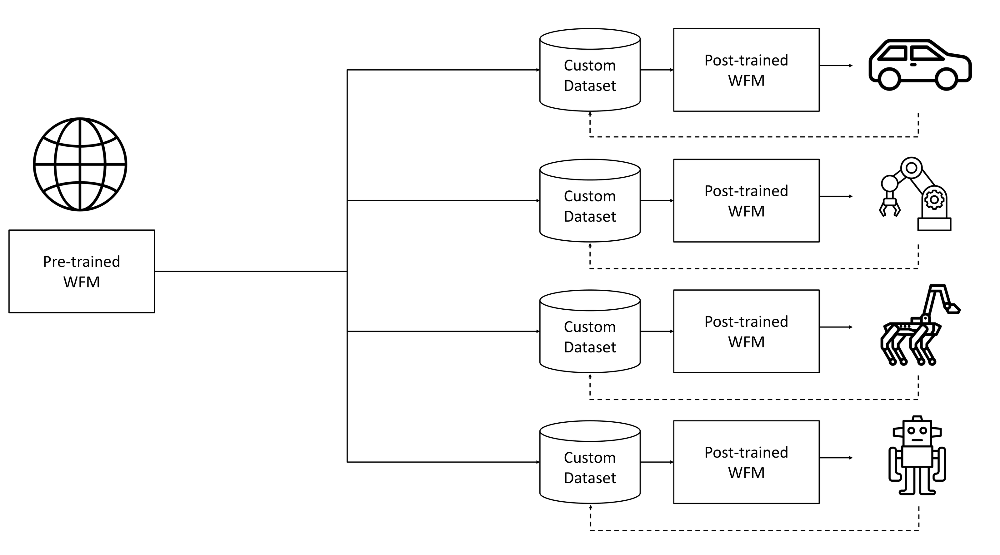
03Cosmos 1 · 架构 · 论文图 · 扩散版 7B / 14B（另有自回归版 4B–13B）
tokenizer 压成 latent，DiT 去噪，文本走交叉注意力
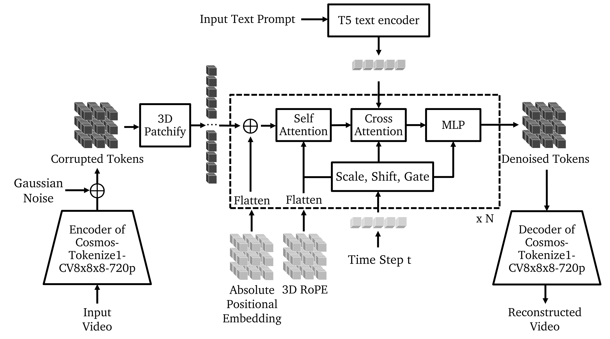
03Cosmos 1 · 数据 · 论文第 3 节 · 专有视频 + 公开互联网视频 · 「数据决定模型的上限」
2000 万小时原始视频，五步清洗，留下约 1 亿段
03Cosmos 1 · 后训练 · Bridge 数据集 · 7B 扩散版 · 上排预测，下排真实
接上 7 维动作：给当前帧和一串动作，出后面的帧
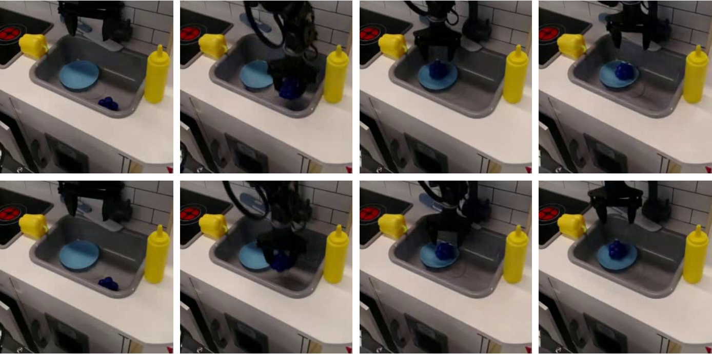
03Cosmos-Predict 2.5 · 2025-10 · Cosmos Policy 和 DreamDojo 的基座
Predict 2.5：外形没变，内脏换了一半，仍然不出动作
| 项目 | Cosmos 1 · 2025-01 | Predict 2.5 · 2025-10 |
|---|---|---|
| 模型族 | 扩散 7B / 14B，加自回归 4B 到 13B | 只有扩散，2B / 14B |
| 训练目标 | EDM 去噪，预测干净的 latent | flow matching，预测速度 |
| tokenizer | 自家 Cosmos-Tokenize1，时间压 8 倍 | Wan2.1 VAE，时间压 4 倍 |
| 文本编码器 | T5-XXL | Cosmos-Reason1，Physical AI 的 VLM |
| 模式 | Text2World 和 Video2World 是两个模型 | 一个模型，条件帧 0 / 1 / 2 帧随机 |
| 后训练 | 高质量子集微调 | 领域 SFT → 模型合并 → RL → 蒸馏到 4 步 |
| Bridge 动作条件预测 PSNR | 7B：21.14 | 2B：24.95 |
04Cosmos Policy · 2026-01 · Kim 等 · NVIDIA / Stanford · ICLR 2026 · 论文图 1
不改架构，视频模型后训练成策略、世界模型、价值函数
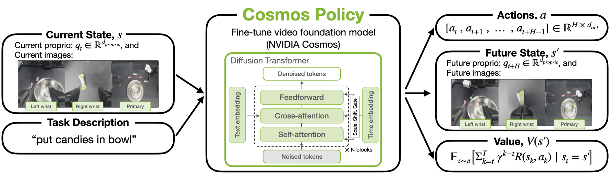
04Cosmos Policy · 核心机制 latent frame injection · 后训练阶段 · 论文图 2 · ALOHA 三路相机
把动作和 value 伪装成 latent 帧，混进视频序列
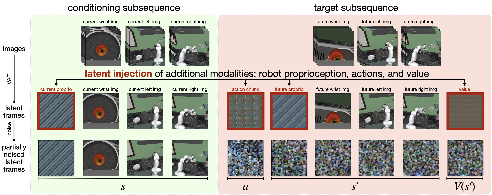
04Cosmos Policy · 附录 A.1 · 非图像模态的编码和读出
动作块：归一化、拉平、复制填满，覆盖一个 latent 帧
04Cosmos Policy · 后训练（预训练是普通视频扩散，没有这些帧）· 论文图 12 · 每个 batch 50 / 25 / 25
同一条序列，哪几帧干净、哪几帧加噪，决定训的是谁

04Cosmos Policy · 推理 · 规划模式 best-of-N · 一步一步看
规划模式：采样、想象、打分、执行最高分
1
拿到当前观测三路相机图过 VAE，本体状态复制填满，拼成条件段；任务文本走交叉注意力
2
采 8 个候选动作块策略模型从 8 组不同噪声出发，各去噪 10 步，得到 8 个不一样的动作块
3
想象每一块的后果把动作块固定成条件，规划模型生成 t+K 时刻的画面，每块做 3 次
4
给想象出的未来打分每个未来再生成 value 帧，做 5 次；一块动作对应 15 个数
5
汇总成一个分15 个数先按阈值投票成败，再在多数那边取均值
6
执行，再来一轮跑分最高的动作块整块执行 2 秒，拍新画面回到第一步
J 下一步 · K 上一步
04Cosmos Policy · 训练 · 附录 A.2 · 全参微调 Cosmos-Predict2-2B
几百条演示，8 到 64 张 H100，48 小时
| 环境 | 机器人 | 演示数据 | 算力 | batch · 步数 | 动作块 |
|---|---|---|---|---|---|
| LIBERO | 仿真 Franka 单臂 | 4 套件 × 10 任务 × 50 条 | 64 × H100 · 48 h | 1920 · 4 万步 | 16 步，全执行 |
| RoboCasa | 仿真 Franka 单臂 | 24 任务 × 50 条人类演示 | 32 × H100 · 48 h | 800 · 4.5 万步 | 预测 32，执行 16 |
| ALOHA | 真机双臂 | 4 任务共 185 条 | 8 × H100 · 48 h | 200 · 5 万步 | 50 步 = 2 秒，全执行 |
04Cosmos Policy · 表 1 / 表 2 · 直接策略模式，不规划 · 成功率 %
LIBERO 98.5，RoboCasa 只用 50 条演示到 67.1
LIBERO · 4 套件 × 500 次 × 3 seed
| 方法 | Long 套件 | 平均 |
|---|---|---|
| π0 | 85.2 | 94.2 |
| π0.5 | 92.4 | 96.9 |
| OpenVLA-OFT | 94.5 | 97.1 |
| CogVLA | 95.4 | 97.4 |
| Cosmos Policy | 97.6 | 98.5 |
RoboCasa · 24 任务 × 50 次 × 3 seed · 未见物体实例
| 方法 | 每任务演示 | 平均 |
|---|---|---|
| GR00T-N1 + DreamGen | 300 + 1 万合成 | 57.6 |
| π0 | 300 | 62.5 |
| GR00T-N1.5 | 300 | 64.1 |
| FLARE / N1.5 + HAMLET | 300 | 66.4 |
| Cosmos Policy | 50 | 67.1 |
04Cosmos Policy · 真机 ALOHA 双臂 · 论文图 3 · 放盘子 · 叠衣服 · 糖果进碗 · 糖果进密封袋
真机四个任务，合训一个模型
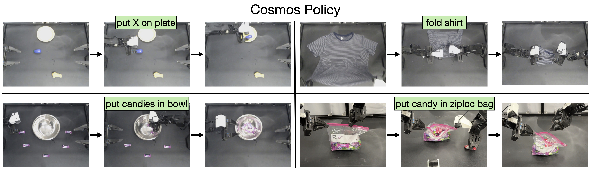
04Cosmos Policy · 真机 ALOHA · 论文图 4 · 完成度得分 · 每个方法 101 次 · 全部 8 × H100 微调 48 h
平均 93.6，π0.5 88.6；密封袋 85.4 vs 61.5

04Cosmos Policy · 消融 · RoboCasa 表 5 · LIBERO 表 4
去掉「顺带预测未来画面」，67.1 掉到 44.4
RoboCasa · 24 任务平均成功率 %
| 拆到哪一步 | 成功率 |
|---|---|
| 完整版，5 步去噪 | 67.1 |
| 去掉价值函数的训练样本 | 66.6 |
| 再去掉世界模型的训练样本 | 64.0 |
| 再去掉策略的 value 辅助目标 | 62.5 |
| 再去掉策略的未来画面辅助目标，只预测动作 | 44.4 |
| 完整版，只去噪 1 步（0.16 秒一块） | 66.4 |
LIBERO · 4 套件平均成功率 %
| 版本 | 成功率 |
|---|---|
| 完整版 | 98.5 |
| 去掉辅助目标 | 97.0 |
| 不用视频预训练，从头训 | 94.6 |
| 真机叠衣服，从头训 | 80.8，低 18.7，动作抖 |
04Cosmos Policy · 规划 · 论文图 6 / 图 7 · 真机最难的两个任务、最难的初始条件 · 648 段 rollout 微调规划模型
先想象再打分：59.5 → 72.0；直接打分只到 61.3

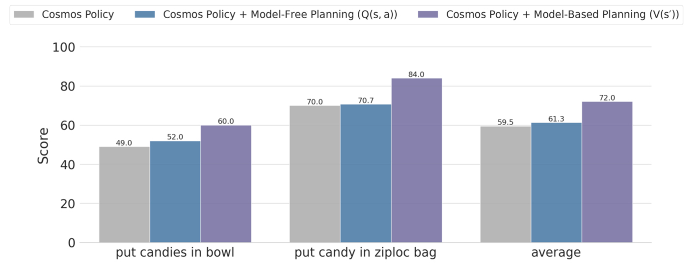
05Cosmos 3 · 2026-06 · NVIDIA 技术报告 · Nano 16B / Super 64B 开放权重 · 论文图 1
一个权重，六种用法：靠输入什么、输出什么来切换
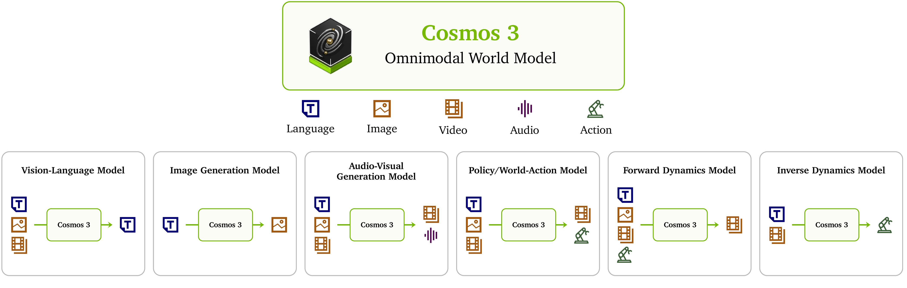
05Cosmos 3 · 架构 Mixture-of-Transformers · 论文图 5 · 两塔都从 Qwen3-VL 初始化
语言塔自回归，生成塔去噪，只在注意力里见面
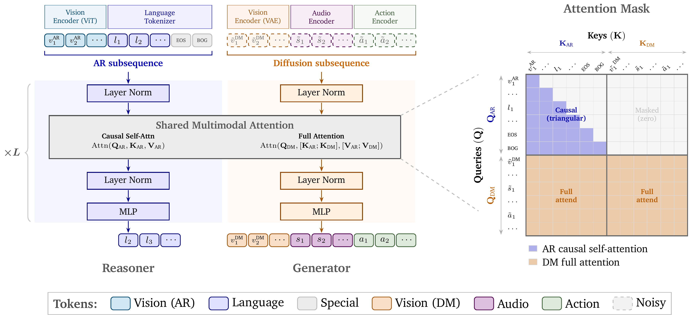
05Cosmos 3 · token 怎么排 · 论文 2.2 节 · 图 4 · 训练和推理同一个模板
一个模板管所有任务：文本在前，条件在中，目标在后
05Cosmos 3 · 动作表示 · 论文图 3 · 每种本体一对线性投影，主干共享
动作 = 相邻两帧之间的状态差分：ego 位姿 · 末端位姿 · 抓取状态
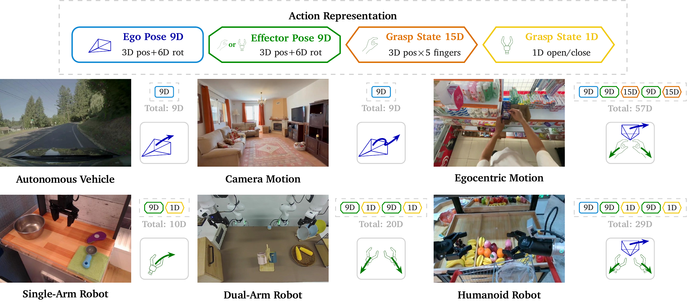
05Cosmos 3 · 训练流程 · 论文第 4 节 · Nano：预训练 31 万亿 token，1024 张 GB200
先训语言塔并冻住，再把它的复制品训成去噪器
05Cosmos 3 · 数据 · 论文图 8 / 图 9 · 生成塔三阶段样本数 · 动作数据构成
动作数据 6.13 万小时，三分之二来自人手
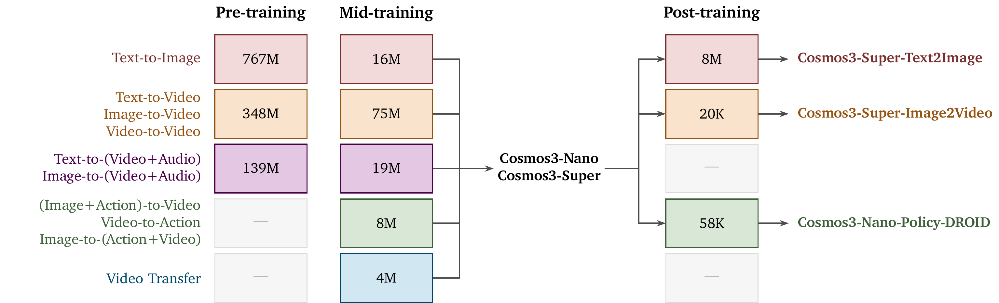
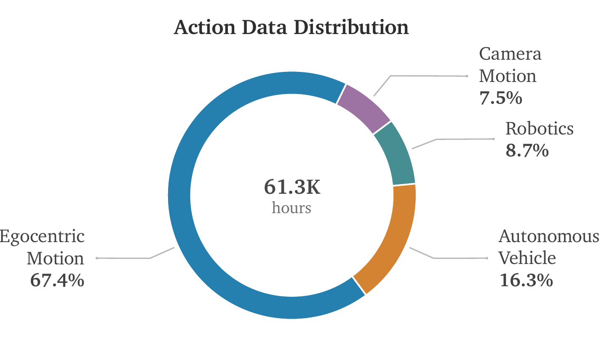
05Cosmos 3 · 推理 · 论文 4.2.5 节 · 5.3 节 · 表 21 · 以 DROID 策略为例
推理：语言塔只算一次，生成塔反复去噪
05Cosmos 3 · 结果 · 视频生成 · 表 12 / 13 / 14 · Super 64B · 四个榜都是 Physical AI 向的评测，没有通用榜
视频生成：开源里第一，和 Veo 3.1 各有胜负
| 评测 | Cosmos3-Super | 对照 |
|---|---|---|
| PAIBench-G · 文生视频 · 自动评 · 六领域 | 80.0 | Veo-3.1 79.1 · Wan2.2-A14B 78.0 · Predict2.5-2B 76.5 |
| PAIBench-G · 图生视频 · 自动评 | 82.8 | Veo-3.1 82.6 · Wan2.2-A14B 81.3 · Predict2.5-14B 81.1 |
| Physics-IQ · 图生视频 · 第三方，只看物理 | 43.8 | Sora2 42.3 · Wan2.2-A14B 38.3 |
| Cosmos-HUE · 文生视频 · NVIDIA 自建人评 | 89.3 | Veo-3.1 91.3 · 真实视频 93.6 · Predict2.5-14B 82.1 |
| Human World Bench · 第一人称人手操作 · 人评 | 71.9 | Veo-3.1 67.8 · Wan2.2-A14B 60.7 · Predict2.5-14B 38.7 |
05Cosmos 3 · 结果 · 前向动力学 FD · DROID · 首帧 + 16 步末端动作 → 16 帧 · 表 18 · 图 24
前向动力学 PSNR 26.04，Ctrl-World 22.99
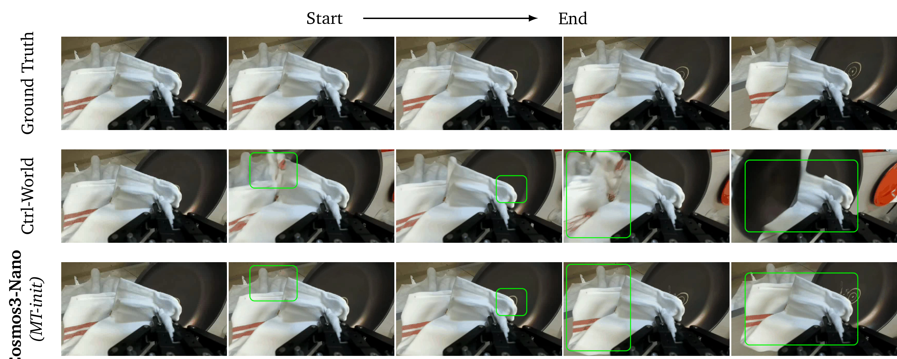
05Cosmos 3 · 结果 · 策略 · 表 19 RoboLab-120 仿真，120 任务 × 10 次，对手都是 DROID 微调版 · 表 20 LIBERO-10 换本体
策略：RoboLab 总成功率 39.7，π0.5 是 28.1
RoboLab-120 · 成功率 % · 按指令具体程度
| 模型 | 模糊 | 默认 | 具体 |
|---|---|---|---|
| Cosmos3-Nano-Policy-DROID | 20.6 | 36.8 | 39.7 |
| 同模型，不经动作 mid-training | 16.7 | 28.1 | 30.2 |
| π0.5 | 15.2 | 28.0 | 28.1 |
| DreamZero | 14.9 | 25.7 | 23.9 |
| π0-FAST | 9.2 | 15.5 | 14.9 |
| GR00T N1.6 | 5.4 | 7.2 | 5.3 |
LIBERO-10 · 新本体快速适配 · 成功率 % · 500 次
| 后训练步数 | 500 | 1000 | 1500 | 2000 |
|---|---|---|---|---|
| 经动作 mid-training | 24.6 | 91.4 | 95.8 | 97.4 |
| 不经动作 mid-training | 0.0 | 73.8 | 93.4 | 95.2 |
05Cosmos 3 · 真机 · RoboArena 众包双盲 A/B · 2026-05-30 · 图 26 · DROID 平台快照
真机 DROID：同一份权重，RoboArena 排第一
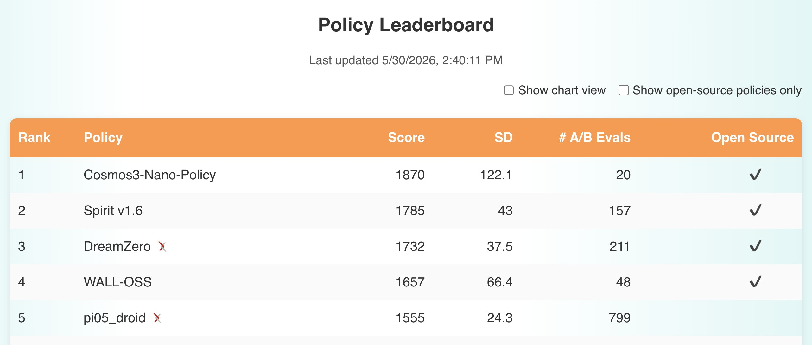
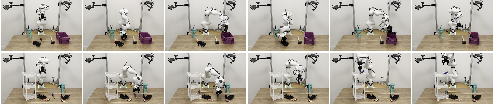
06局限
局限
作者自己说的
Cosmos Policy：想一次要停 5 秒，想的时候机器人不看画面，只能做桌上东西不会自己动的任务；规划前要真机先跑几百次攒失败样本；每次只往前想 2 秒、选一块，不接着往后想
Cosmos 3：策略只在 DROID 一个机器人上做了一次，作者叫它试点；RoboArena 第一是 5 月 30 日那天的榜，只评了 20 次；世界模型好坏只用 1 秒钟的逐像素 PSNR 衡量；三种动作模式一起训，世界模型反而略降
Cosmos 1：生成的画面物理不对，物体位置 IoU 0.6 上下，模型变大也不变好；提出的五种用途一个实验都没做
我读出来的
慢：先生成像素再做别的，不规划也要停 0.6–0.95 秒出一块、闭眼执行 2 秒；Cosmos 3 想象一段 720p 视频单卡 5 分钟。想象只能放在慢回路里
世界模型只走一步：Cosmos Policy 只画 2 秒后那一帧，画完不能接着画；Cosmos 3 能往下画，却没有 value 给未来打分
泛化没真测：Cosmos Policy 的分布外只是同一张桌子换物体；Cosmos 3 换机器人要新训投影层加几万条演示，没有零样本
数据专有：人手 4.13 万小时、驾驶日志、预训练视频都不公开，能复现的只有后训练
07小结 · 五篇放回一张图
三年半：动作从模型外面走进了模型里面
2023-02
UniPi
视频即策略
IDM 翻动作
IDM 翻动作
2024-02
Genie
隐动作
逐帧可控
逐帧可控
2025-01
Cosmos 1
预训练 + 后训练
动作只作输入
动作只作输入
2026-01
Cosmos Policy
动作伪装成帧
策略 + 世界模型 + value
策略 + 世界模型 + value
2026-06
Cosmos 3
动作是正式模态
语言塔 + 生成塔
语言塔 + 生成塔
这条线不变的东西：互联网视频预训练 · 在像素或 latent 里生成，看得见 · 动作和画面在同一个模型里 · 后训练接具体的本体
下期：世界模型 · 第 4 期